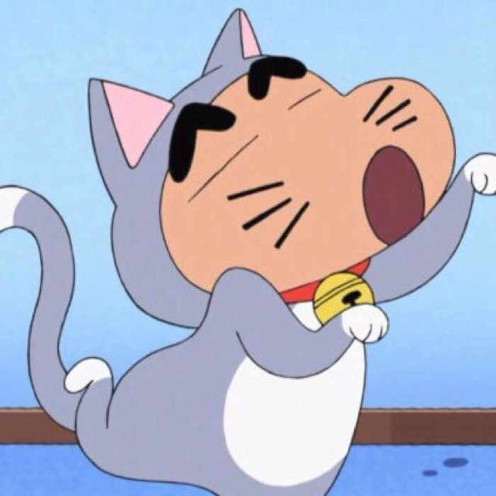

航概妹
Zootopiar 发音和Utopia何其相似，而且动物城真的很像一个乌托邦，但中文译名却是《疯狂动物城》，跟乌托邦相差十万八千里，八杆子打不着，原片名的寓意一点也没翻译出来（也许是跟zheng治有关不能这么翻译）。梦想中的乌托邦是人人平等的，大家和平相处无纷争，没有等级阶级观念，没有种族歧视之分。可是在这个景色无比优美的动物乌托邦世界里却存在着分化严重的歧视，或许可以说是长久以来的偏见，这种偏见往往由一种偶然发生的个体事件经过不恰当的宣传舆论扩大到大众认知当中，从而产生一种大众心理，举个例子，一个维吾尔族人偷了你的钱包，你对旁人说：“新疆人偷了我钱包。”这件事经过传播再传播就变成了大部分人对新疆人都有所忌讳，就像影片中狐狸被贴上狡猾的标签，导致他去冰棍店也买不到冰棍。
Zootopiar 发音和Utopia何其相似，而且动物城真的很像一个乌托邦，但中文译名却是《疯狂动物城》，跟乌托邦相差十万八千里，八杆子打不着，原片名的寓意一点也没翻译出来（也许是跟zheng治有关不能这么翻译）。梦想中的乌托邦是人人平等的，大家和平相处无纷争，没有等级阶级观念，没有种族歧视之分。可是在这个景色无比优美的动物乌托邦世界里却存在着分化严重的歧视，或许可以说是长久以来的偏见，这种偏见往往由一种偶然发生的个体事件经过不恰当的宣传舆论扩大到大众认知当中，从而产生一种大众心理，举个例子，一个维吾尔族人偷了你的钱包，你对旁人说：“新疆人偷了我钱包。”这件事经过传播再传播就变成了大部分人对新疆人都有所忌讳，就像影片中狐狸被贴上狡猾的标签，导致他去冰棍店也买不到冰棍。